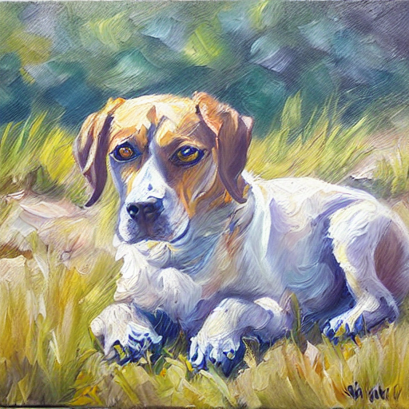
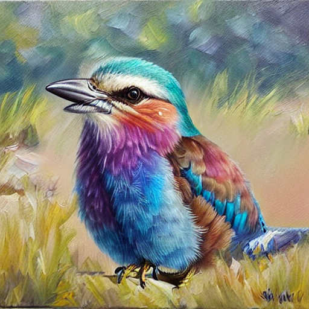
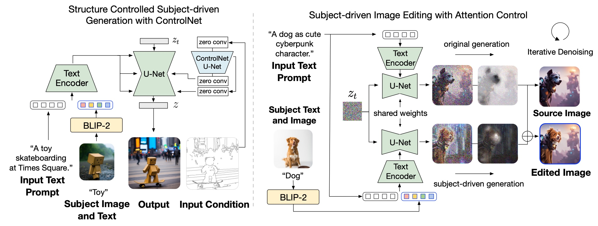

BLIP-Diffusion: Pre-trained Subject Representation for Controllable Text-to-Image Generation and Editing
Bringing built-in multi-modal text-and-subject control to diffusion models.

Subject-driven text-to-image generation models create novel renditions of an input subject based on text prompts. Existing models suffer from lengthy fine-tuning and difficulties preserving the subject fidelity. To overcome these limitations, we introduce BLIP-Diffusion, a new subject-driven image generation model that supports multimodal control which consumes inputs of subject images and text prompts. Unlike other subject-driven generation models, BLIP-Diffusion introduces a new multimodal encoder which is pre-trained to provide subject representation. We first pre-train the multimodal encoder following BLIP-2 to produce visual representation aligned with the text. Then we design a subject representation learning task, called prompted context generation, which enables a diffusion model to leverage such visual representation and generates new subject renditions. Compared with previous methods such as DreamBooth, our model enables zero-shot subject-driven generation, and efficient fine-tuning for customized subject with up to 20x speedup. We also demonstrate that BLIP-Diffusion can be flexibly combined with existing techniques such as ControlNet and prompt-to-prompt to enable novel subject-driven generation and editing applications.
Natural language prompts are usually effective to specify generic image
content. Yet, they can be inadequate to accurately describe highly
customized visual concepts, or the novel ones that are not acquaint to
the underlying text-to-image image. One example is to generate a cool
oil painting of your pet puppey, who has unique back markings. Instead
of describing the markings in text, it is more clarified to just show
the model a few images of the puppey as conditions. Another case is that
imagine you are using an AI interior design assistant to decorate your
new house. Instead of describing the interior design style you like in
text, it is more effective to show the model a few photos of the style
you like. Both cases motivate the use of multimodal inputs, as a
complementary source of information to guide the generation process.
However, existing text-to-image generation models are not designed to
support such multimodal conditions. This leads to inefficiency to adapt
them in related applications, such as the task of subject-driven
text-to-image generation. In addition, having multimodal conditions
enhances the controllability of the generation process - highly
desirable for real-world generative AI applications. As such, we propose
BLIP-Diffusion, a new subject-driven image generation model with
built-in support for multimodal conditions, bringing high-level
controllability to diffusion models.
Given a few images of a subject, our model can generate novel renditions of the subject based on text prompts. The following examples show such subject-driven text-to-image generation results on the DreamBooth dataset. Each row shows the results of a different subject. Benefiting from the pre-traiend subject representation, our model shows superior fine-tuning efficiency and high subject fidelity. For example, our model requires on average less than 80 steps for generic subjects, less than 40 steps for certain subjects, as opposed to DreamBooth (600-1200 steps) and Textual Inversion (~3000 steps), a 10-20x higher fine-tuning efficiency.
To showcase the subject fidelity, we create the following challenge, where in each row, we mix one geniune subject image with generations from our model. Can you guess which one is the geniune subject image? Click the image to find out the answer! Not challenging enough? Click "Challenge" for more!
Our model can edit source images with subject-specific visuals. We refer
this task as subject-driven image editing. The following examples
show results of such applications. On the left, we show
the source image we'd like to edit. On the right, we
show images of subjects we'd like to edit the source image with. For
example, in the first image of squirrel, we aim to edit the source image
by replacing the dog with the squirrel. In the meantime, the background
should be preserved. Note how postures of the subjects naturally fit
into the source image. This shows that the editing process is not just a
simple copy-and-paste.
Click on each subject image to see the zero-shot editing results
with different subjects.


We can also use fine-tuned model to enable editing with highly-customized subjects. The appearance of the subjects are well preserved. Also note the lighting on the subjects are nicely blended into the source image, e.g. the vase example.
source image
a burger on the sea with sunset.
subject imagee
cake
editing output
a cake on the sea with sunset.
source image
a vase with weed in the mountain.
subject image
vase
editing output
a vase with weed in the mountain.
source image
a dog, cyberpunk character ...
subject image
dog
editing output
a dog, cyberpunk character ...
source image
a dog on the grass, oil painting.
subject image
bird
editing output
a bird on the grass, oil painting.
Our model is able to extract subject features to guide the generation. In addition to applications of subject-driven generations and editing, we show that such pre-trained subject representation enables intriguing and useful applications of zero-shot image manipulation, including subject-driven style transfer and subject interpolation.
Left: subject interpolation. It is also possible to blend two subject representation to generate subjects with a hybrid appearance. This can be achieved by traversing the embedding trajectory between subjects. Drag the slider to see the interpolation results.
Right: subject-driven style transfer. When provided with a subject, the model can encode the appearance style of it and transfer to other subjects. We refer such an application as subject-driven style transfer. Click on different reference and guiding subjects to see the style transfer results.
Subject Interpolation

Subject-driven Style Transfer

Reference Subjects
Guiding Subjects


Central to our approach is the novel concept of pre-trained subject representation. Such representation aligns with text embeddings and in the meantime also encodes the subject appearance. This allows efficient fine-tuning of the model for high-fidelity subject-driven applications, such as text-to-image generation, editing and style transfer.
To this end, we design a two-stage pre-training strategy to learn generic subject representation. In the first pre-training stage, we perform multimodal representation learning, which enforces BLIP-2 to produce text-aligned visual features based on the input image. In the second pre-training stage, we design a subject representation learning task, called prompted context generation, where the diffusion model learns to generate novel subject renditions based on the input visual features.
To achieve this, we curate pairs of input-target images with the same subject appearing in different contexts. Specifically, we synthesize input images by composing the subject with a random background. During pre-training, we feed the synthetic input image and the subject class label through BLIP-2 to obtain the multimodal embeddings as subject representation. The subject representation is then combined with a text prompt to guide the generation of the target image.

Our model introduces a multimodal conditioning mechanism for subject-control. In the meanwhile, the architecture is also compatible to integrate with established techniques built on top of the diffusion model, such as ControlNet and prompt-to-prompt for controllable generation and editing.
For ControlNet, we attach the U-Net of the pre-trained ControlNet to that of BLIP-Diffusion via residuals. In this way, the model takes into account the input structure condition, such as edge maps and depth maps, in addition to the subject cues. Since our model inherits the architecture of the original latent diffusion model, we observe satisfying generations using off-the-shelf integration with pre-trained ControlNet without further training
For subject-driven image editing, we extract automatically an editing region to edit using attention maps. We mix the denoising latents at each step based on the extracted editing mask. Namely, latents of the unedited regions are from the original generation whereas latents of the edited regions are from the subject-driven generation. In this way, we obtain the edited image with subject-specific visuals while also preserving the unedited regions.
Image generation models are susceptible to be used as tools for generating false content or prompting misinformation. Subject-driven generation could be misused as a tool for generating fake image of individuals. To mitigate this issue, our model has been trained on generic objects where person-related subjects have been purposely removed from the training data. This makes the model weaker at generating fake images using person as subject control.
Our model is built using the pre-trained Stable Diffusion model trained on web-scraped datasets. Therefore, our model inherits some shortcomings from Stable Diffusion, such as generating biased contents with social stereotypes, or other NSFW contents if used inappropriately. Our model's ability to precisely control the generation subject can help mitigate certain biases. We can use NSFW detectors to block potential inappropriate content from being generated. Nevertheless, we strongly caution against using our model directly in user-facing applications without a careful inspection of the model's output. Proper content moderation and regulation are highly advised to prevent undesirable consequence.
Acknowledgement: We thank colleagues at Salesforce AI Research for support and helpful discussion, and authors of LDM, DreamBooth, ControlNet, Prompt-to-Prompt for inspiration. The website design is based on DreamBooth and Prompt-to-Prompt project pages.